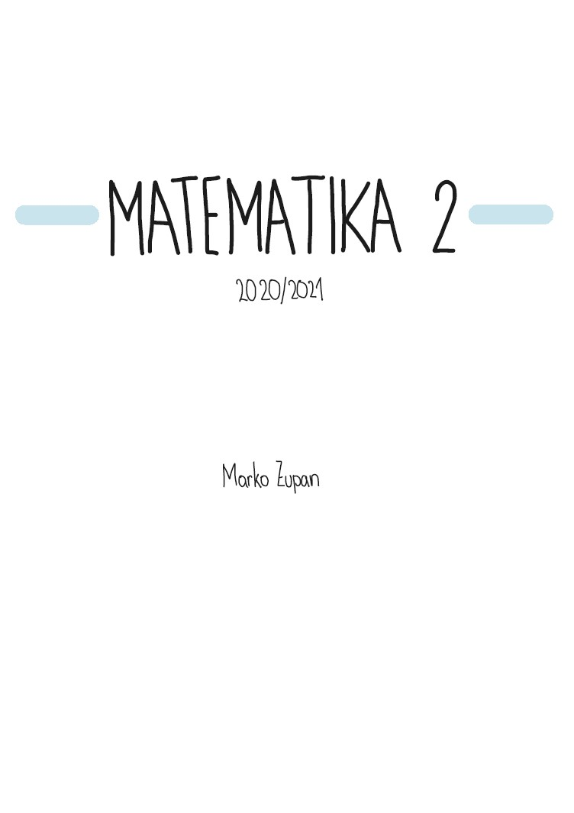
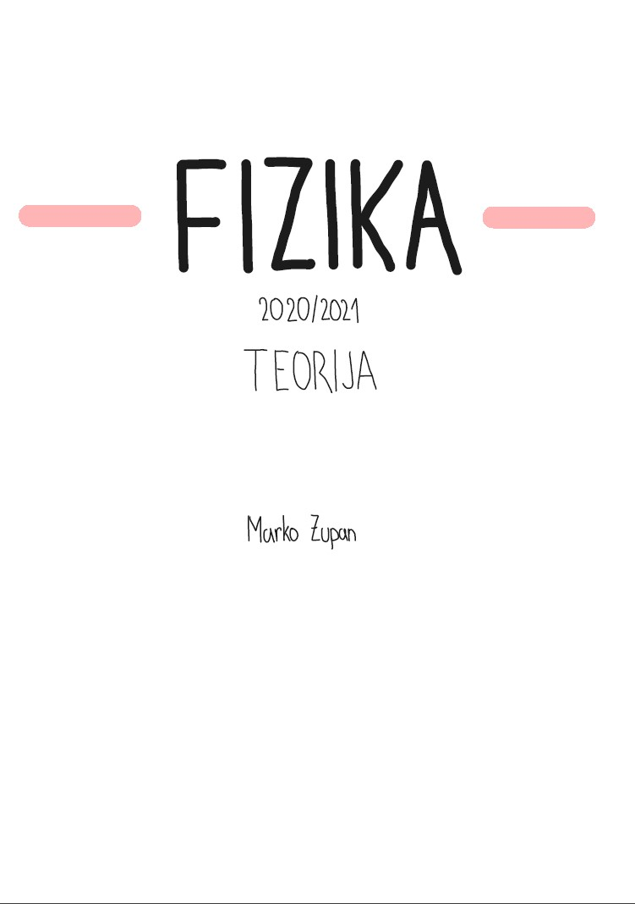
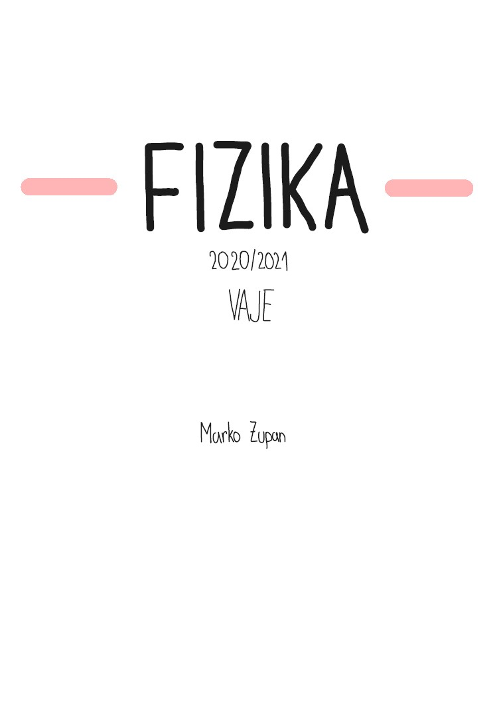
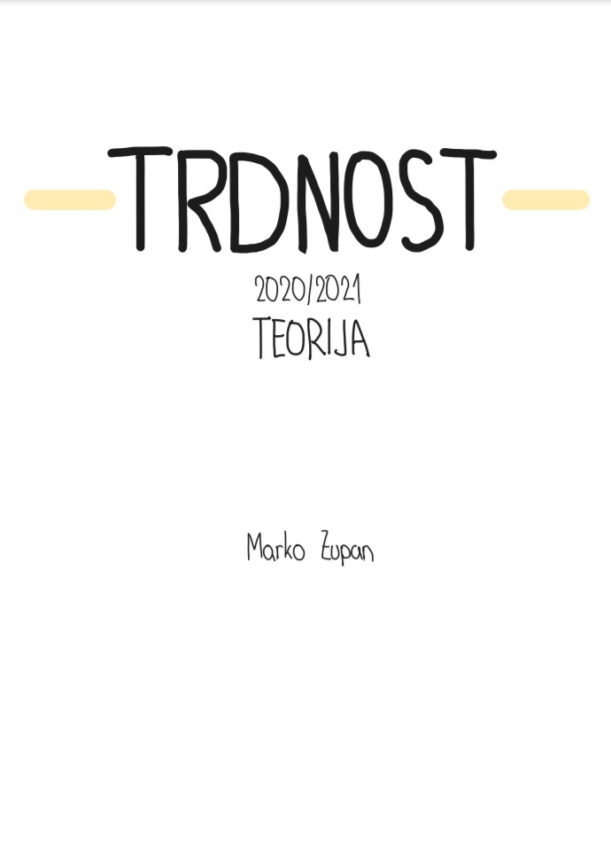
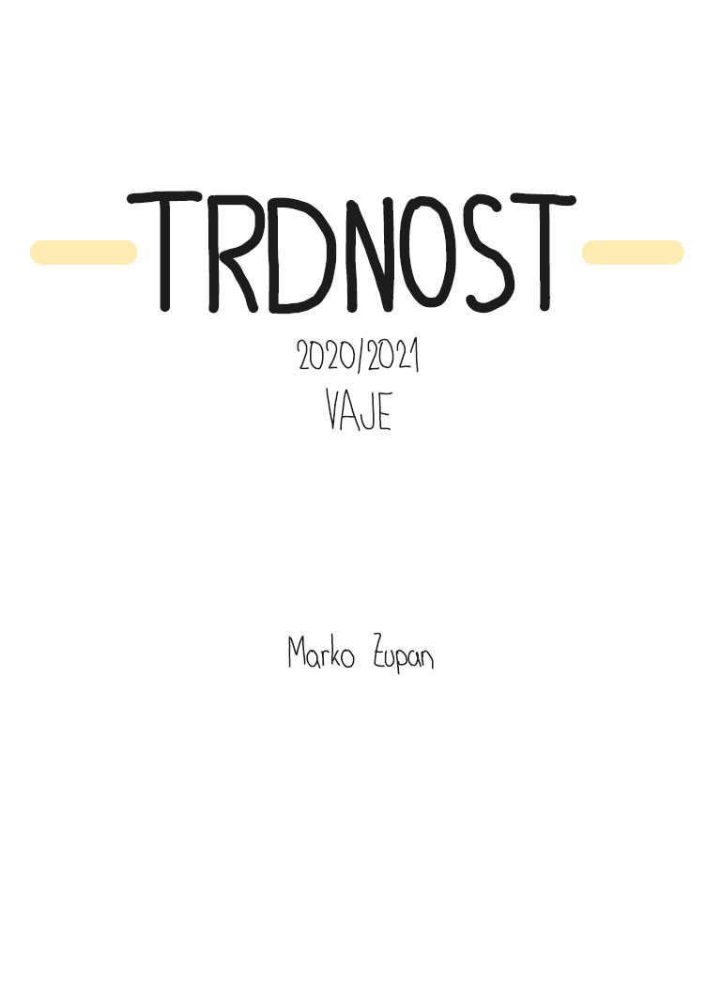

UREJENI ZAPISKI
Vsi zapiski so narejeni na tablici in so združeni v en PDF dokument. S klikom na naslovno sliko lahko predogledate DEMO dokument, ki prikazuje kakšni so zapiski od znotraj. Lahko jih dobite natisnjene ali kot e-dokument (v tem primeru je cena višja).
Druge informacije pišejo pod dokumentom. Če vas zanima še kaj, me kontaktirajte.

MATEMATIKA 2
zapiski iz predavanj
32 strani

FIZIKA
zapiski iz predavanj
59 strani

FIZIKA
zapiski iz vaj
23 strani

TRDNOST
zapiski iz predavanj
40 strani

TRDNOST
zapiski iz vaj
30 strani

GRADIVA 1
izpiski snovi
8 strani